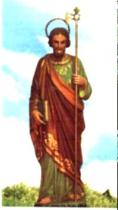
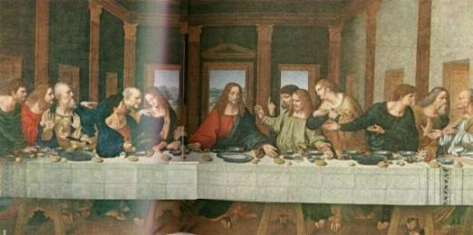

No Menológio do Imperador Basílio da
Grécia, no dia 19 de Junho encontra-se o texto abaixo:
No Menológio do Imperador Basílio da
Grécia, no dia 19 de Junho encontra-se o texto abaixo:
A Sagrada Escritura quase não menciona o nome
de Judas Tadeu, 
Este procedimento revela a dimensão de seu interior: amava tanto o Mestre Divino, estava tão impressionado com os ensinamentos, o exemplo e os milagres que JESUS fazia, que almejava enaltece-lo, fazendo com que fosse revelado ao mundo, para que pudesse ser mais conhecido e amado por todos.
A resposta do SENHOR foi clara e repleta de verdade: ?Se alguém me ama, guardará minha palavra (Não é o caso do mundo, que não acolhe a palavra de DEUS) e meu PAI o amará e a ele viremos e nele estabeleceremos morada?.(Jo 14,23)

O que JESUS disse ao Apóstolo tem um significado muito profundo: quem quer conhecer e amar o SENHOR deve procurar o seu ensinamento, a fim de poder estabelecer uma crescente amizade com ELE, que na continuidade desabrochará num maravilhoso amor, de tal modo, que conduzirá o fiel a seguir o caminho Divino porque sentirá em seu coração a presença real do DEUS Vivo e Verdadeiro, que envolve e protege a sua vida.
JESUS, seguindo a Vontade do PAI ETERNO, se fez conhecer à humanidade na intensidade certa e nos momentos exatos. Com a liberdade que possuímos, cabe às pessoas sentir o momento de procura-LO, para demonstrar-LHE amizade e amor.
Depois que os Apóstolos receberam o Espírito Santo, no Cenáculo em Jerusalém, iniciaram a construção da Igreja de DEUS começando pela evangelização dos povos. São Judas iniciou sua pregação na Galiléia. Depois viajou para a Samaria e outras populações judaicas. Tomou parte no primeiro Concílio de Jerusalém, realizado no Ano 50. A seguir, foi evangelizar a Síria, Armênia e Mesopotâmia (atual Pérsia), onde ganhou a companhia de outro apóstolo, Simão, o ?Zelote? , que evangelizava o Egito. O nome "Zelote" pode significar que antes dele ser chamado por JESUS, era membro de uma facção patriota de judeus que se revoltaram contra a ocupação romana em Israel, muito embora a palavra zelote pode também se referir ao fervor e zelo com que ele procurava cumprir a lei judaica. Estudiosos modernos afirmam que Simão era um Galileu e que a alcunha de ?Zelote?, sem dúvida, era pelo fato dele ser muito zeloso no cumprimento da lei.
A pregação e o testemunho de São Judas Tadeu, foi realizado de modo enérgico e vigoroso, que atraiu e cativou os pagãos e povos de outras religiões que se converteram ao cristianismo. Ele mostrou que sua adesão a CRISTO era completa e incondicional, testemunhando sua fé com doação da própria vida.
José de Simão Assemani, da Biblioteca Oriental de Lisboa, afirma que os Sírios e Caldeus reconhecem que São Judas Tadeu foi um dos principais evangelizadores do Oriente, tendo sido através dele que receberam a fé cristã. E também, lhe atribuem a inspiração para a criação da sede arquiepiscopal na Seleucia.
Por outro lado, São Jerônimo nos assegura que o Apóstolo pregou e evangelizou Edessa, bem como em toda Mesopotâmia (Pérsia).
Para confirmar, no Calendário Marmóreo de Nápoles que era utilizado no século IX, está fixada a festa do Santo em 26 de Maio, e no Livro de Freculfo Lexoviense, encontramos o seguinte texto no capitulo XIX do segundo volume:
?Judas, irmão de Tiago, pregou o Evangelho na Mesopotâmia e no interior do Ponto. Abrandou com sua doutrina santa, gente selvagem e indômita com naturezas quase animalescas, e subjugou-as à fé cristã. Foi sepultado em Nerito, cidade da Armênia. Deixou-nos uma breve Epistola, que se conta entre as sete Epistolas Católicas?.
Também a comunidade grega conserva a mesma tradição acerca da missão do Apóstolo na Mesopotâmia. Num opúsculo escrito por Hipólito Portuense, com o titulo: O APÓSTOLO JUDAS TADEU NA MESOPOTÂMIA" ele afirma na página sete:
?Judas, também apelidado de Lebeu (por ser cordato, bondoso, corajoso), depois de haver pregado ao povo de Edessa e de toda Mesopotâmia, faleceu em Berito (ou Nerito) e ali mesmo foi sepultado?.
No Menológio do Imperador Basílio da
Grécia, no dia 19 de Junho encontra-se o texto abaixo:
?Judas, o Apóstolo de CRISTO, a quem o Evangelista Lucas, nos Atos dos Apóstolos, chama por este nome, mas que é chamado Tadeu pelos Evangelistas Mateus e Marcos, foi parente de NOSSO SENHOR JESUS CRISTO segundo a carne, porque José esposo de Maria, era irmão do pai dele. Escreveu uma Epistola cheia de luz e repleta da doutrina do ESPÍRITO SANTO. Fortalecido pelo próprio CRISTO e cheio do ESPÍRITO SANTO, dissipou o erro e iluminou a todos os fieis, com a doutrina verdadeira. Chegando a Mesopotâmia converteu muita gente do povo ao SENHOR pela promulgação do Evangelho. Depois seguiu para a cidade de Edessa, onde curou Abgar, príncipe de Edessa e rei de Osrema, de uma terrível doença. Por último, dirigiu-se à cidade de Arate, onde foi martirizado. E assim terminou a vida?.
Da mesma forma, os orientais afirmam com unanimidade que São Judas Tadeu pregou o Evangelho na Mesopotâmia e no Extremo Oriente. E assim, em toda a parte por onde passou evangelizando, atraiu multidões de pessoas e fez admiráveis milagres, pela vontade do SENHOR. Eram cegos, coxos, gente com todo tipo de deformação física ou de doença, que buscavam ansiosamente um lenitivo para sua dor ou a cura definitiva de seus males. O CRIADOR bondade infinita, paternalmente acolhia aquelas dolorosas súplicas e através de seu humilde e fiel servo São Judas Tadeu, realizava extraordinárias manifestações sobrenaturais em benefício daquela gente.

IMAGENS - De cima para baixo: 1) O Apóstolo São Judas; 2) JESUS com os Apóstolos, na Última Ceia no Cenáculo em Jerusalém; 3) Passagem evangélica (Lc 7,36-38) JESUS em companhia dos Apóstolos, faz refeição na casa de um fariseu, enquanto uma mulher pecadora beija seus pés, lava-os com suas lágrimas e enxuga com os cabelos; 4) JESUS e alguns Discípulos, inclusive São Judas Tadeu, almoçam na casa de São Mateus com publicanos e pecadores (Mt 2,15-17); 5) Bodas em Caná, quando JESUS chamou Judas Tadeu e Simão Zelote para segui-LO (Jo 2,1-12)